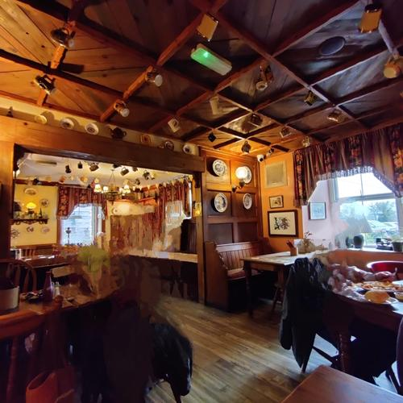

Saturday, 7th October, 2023Farlam to Cilybebyll 288 miles: Principal Driver - Bernard
Co-driver - Jill
Route - M6 and then M56 in direction of Chester, followed by A483 to Rhos via Wrexham, Oswestry and Buith Wells followed by a traverse of Bannau Brycheiniog (formerly known as Brecon Beacons) National Park
Set off at 9.20am for Wales, with the bikes safely in tow, the plan being to do some cycling whilst we were away. Elena was safely back at Farlam with the most important job
of minding Lennie (who on this occasion was to be spared from having to go and stay in Snuggles cattery). Both Google maps and the sat nav advised the quickest and shortest route to be the above.
We decided to test whether this would be true....
Our increased length with the trailer and bikes meant a new, improved parking slot at the motorway servicesShort stop en route in the Bannau Brycheiniog (Brecon Beacons)Safe arrival at our accommodation in the Swansea valleyChance to meet local fox during our early evening stroll
Sunday, 8th October, 2023Day out to see Harry near Cardiff
It was off to Harry's today for the first of the 2 days we would be spending there (1hr 15 minute drive via the M4). The plan was to go out for lunch, and as it was a lovely day,
to visit Cosmeston Lakes and Medieval Village in the afternoon, which is owned by Vale of Glamorgan Council .
Whilst very busy at Cosmeston Lakes and Medieval Village, once you get away from the main areas and walkways, it is more extensive than if first appears, extending over 100 hectares of land and water, and it is easy to see why it is a haven for wildlife and how some areas are designated a Site of Special Scientific Interest.The medieval village
is set in 1350 and is a living history museum aiming to try and recreate 14th century Welsh peasant life in the Late Middle Ages, using reconstruction of the buildings and actors. After a busy afternoon walking round the Lakes and medieval village,
it was time for a visit to the café and then home to the flat for harry to enjoy one of Steve Wilson's famous pies from the local butcher in Cumbria.
Good :
Harry: It was great to be able to go out with Harry for the day.
Restaurant: Pleasant meal which everyone enjoyed.
Cosmeston Lakes and Medieval Village: Whilst very busy, especially as the weather was good, there were many areas which could easily be accessed to find somewhere peaceful. The medieval village was also interesting and well-done.
Weather: It always helps when it is warm and the sun is shining!
Rating: 9 (out of 10) The only improvement would have been Cosmeston Lake being quieter.
The most important part...Harry enjoying lunch at the restaurantBernard's lunch at the restaurantBernard enjoying his lunchMost importantly dessert...treacle sponge and custard
Harry at the entrance to Cosmeston LakesHarry & Jill enjoying the sunny weather at Cosmeston Lakes...as were all the seagulls and ducksPleasant views and places to walk
The Tithe Barn (where taxes were collected) Cosmeston Medieval VillageAmgueddfa (museum) Cosmeston Medieval VillagePie from Steven Wilson's butcher's, Cumbria
Monday, 9th October, 2023 Walk Rhossili Beach and Down, Gower Peninsula:
The Gower Peninsula in Glamorgan has long been a destination we have wished to visit but, because it is such a long drive from the North of England, we had never
got round to going. This time, we determined, would be different and the first day which had decent weather forecast, we set off promptly for Rhossili village
where there is a large National Trust car park next to the beach. The drive over to the Gower Peninsula was winding and the roads fairly busy.
However, there were some interesting livestock 'traffic-control' measures en route as can be seen in the photos below.
As the Swansea Council reported in their September 2023 press release Rhossili Bay on Gower peninsula is one of only two UK beaches to feature in a Big 7 Travel list of the planet's 50 must-see beaches.
The beach is popular with surfers, of which there were a number on the day we were there. As it was low tide the walk along the beach was straightforward and we were able to go right up to the remains of the Helvetia shipwreck
Half-way along the beach, by Hillend Camp site we turned inland and climbed the grass path up the hillside, joining the Rhossili Down's ridge near 'Burnt Mound', one of several prehistoric burial sites visible from the path. Then
returned along the ridge, before dropping back down into Rhossili village and out towards Worm's Head.
Details of the Walk
Way-marked: Green (up to 2.5 hrs)
Parking: Large National Trust car park (free for National Trust members) in Rhossili village
Ascent: 235 metres.
Distance:7 km
Good :
Location:Rhossili Bay and the views both from the beach, the ridge and Worm's Head are spectacular.
History : Some interesting prehistoric burial sites on the ridge of Rhossili Down.
Nature of walk:Interesting and enjoyable walk as along the beach at first, then also a steep ascent up on to the ridge and ridge walk on the return.
Weather: Good
Not so good :
Accessibility: The roads out to the Gower are busy and winding, so even a short distance can seem a long way.
Rating: 10 (out of 10)
Interesting livestock traffic control measures on our drive to the Gower peninsulaEventually, we arrived at the National Trust car park in RhossiliAnd obtained some well-deserved coffee at the caféThen it was time to start the walk: along the beach first, then ascend up, and return along Rhossili Down's ridge
Admiring the view on descent to Rhossili beachRemains of the Helvetia shipwreck which ran aground here in 1887Jill by the Helvetia shipwreck remainsJill on Rhossili beach
Beautiful sandcastle someone had built on the beachLow-flying aircraft on exercises over the beachView from ascent up on to ridge of Rhossili DownAt last..time for lunch!
Bernard at lunch on the ridge of Rhossili DownRemains of Rhossili Down radar station ..And lovely view down to Rhossili beach and Worm's head from site of radar stationJill on ridge of Rhossili Down
The free-roaming ponies and horses Worm's Head..And a little closer, but not so close as to frighten themView of Rhossili beach from Worm's head
...And in panoramaThe old coastguard station at Worm's Head which is manned by volunteers (Click on the link to find all about the crossing and the volunteers who man it.)Sign advising public times of safe-crossing to Worm's Head
Today it was time to take out the bikes after all the driving of the previous few days and to cycle directly from where we were staying down to where we were staying on the Sustrans National Cycle Network 43
There was a challenging section on the main A road down into Pontardawe to join the cycle route but after that, it was a traffic-free route all the way.There were however a number of pedestrians and forestry workers cutting trees etc, so care was needed, particularly on the narrow stretches where the cycle path was sandwiched between the canal-edge on one side and a drop down to a river on the other...!
Bernard sped along at high speed, rushing ahead whereas Jill trailed along at the rear until it was discovered, that Bernard had been quite sensibly using his battery all the way whereas Jill had been trying to maximise calorie usage and only used the battery on the final hill on the return journey, when battery was set to 'turbo'....
Details of Cycle
Way-marked, with various joining points en route:
Distance:26 miles round trip
Good :
Cycle ride:Our first 'away' cycle ride in another area we had attempted and also, at 26 miles, the furthest.
Off-road for the main part:which helped alot.
Weather: Pleasant, dry day. Great for cycling.
Managed not to fall in the river or canal: Although Jill did try this at one point!
Not so good :
National Cycle Network: There was not clear demarcation between lands for cycle and pedestrians which meant on narrow sections care was required. ALso not at all points well signposted.
Bridge closure on marina: The closure for maintenance of one of the marina bridges which links the NCN43 with the cycleway between the Mumbles and Swansea Marina, so we could not extend the route as planned up to the Mumbles.
Rating: 8 (out of 10)
Bernard...all set for the bicycle ride..Safe arrival at Swansea Marina ... for lunch and a half way stopJill at Swansea MarinaThe return journey.. time for a coffee break
Wednesday, October 11th, 2023Trip to Caerphilly Castle
Today we went to visit Caerphilly Castle which was built in 1268 by the marcher Lord Gilbert de Clare due to his fears and concerns about the increasing power of the then Prince of Wales
Llywelyn ap Gruffudd. It was the largest castle in Wales, second only to Windsor Castle in all of Britain and was intended both as a fortress of great strength but also a symbol of lordship and power.
It covered a total of 30 acres and consisted of massive walls, towers and gatehouses and is an early example of the concentric (walls within walls)
principle of defence.
After Llywelyn died, it was transformed into a palatial home with a hunting park and northern lake. It was subsequently passed to Hugh Despenser (a favourite of Edward II), who revamped the great hall ornately.
When we visited, the central area of the castle was closed to access as development works were taking place in the Great Hall, central courtyard and some ground floor areas of the inner ward.
However it was permitted to look through, so we could see into these areas, including the Great Hall, and we did get a free guide book as a result! We also had full access to the famous leaning tower, which was very good.
Then it was time for Coffi Vista, the coffee shop across from the castle, for coffees.
Coffi Vista : Really lovely coffee, lunch and cake stop opposite the castle which is very popular with the locals.
The leaning tower :Quite entertaining
Entrance :The castle is managed by Cadw, so English Heritage members can enter for free
Not so good :
Route : The M4 was closed due to an incident so it was along the A roads with all the other traffic diverted from the motorway...
Parking in Caerphilly : Parking is difficult in Caerphilly and the town centre busy. There is a limited amount of free, on-street parking behind the castle but this was full. So we ended up on Morrison's car park for 3 hours and bought some shopping there.
Rating: 7 (out of 10) due to the access and parking challenges and closure of some areas.
Entering Caerphilly Castle..After reading the information boardAnd meeting some of the current-day residents...Bernard walking in the footsteps of Gilbert de Clare
Entering the main castle areaThe famous leaning towerMeeting current residents of chamber 2nd floor, inner East gatehouse. View of castle grounds and surrounding countryside from up on walls
Thursday, October 12th, 2023Trip to Caerdydd/Cardiff on the train to go shopping and visit the National Museum.
Today we decided to have a day out in Cardiff city centre, traveling by train from Neath station. So it was a
prompt start in order to be down at the station to catch the 9.35am train into Cardiff Central, a 42 minute journey. First to John Lewis in St David's Dewi Sant
to look for clothes and have a coffee in the café, which is very pleasant and spacious. Then it was on with the shopping, however Cardiff city centre is a very large shopping area ...and we got
very lost.... (we calculated by the end of the day, we had walked over 5 miles!)
Soon it was lunch and into Pizza Express for Pizza Florentine and dough balls (Bernard) and melanzane parmigiana (Jill). Then in the
afternoon, it was up to the National Museum to explore the upper
level art gallery which has some really interesting and well-known works of art including Renoir's 'La Parisienne' 1874,
Meng's 'Richard Wilson' c.1752, Cima de Conegliano's 'Virgin and Child' c.1500 amongst others.
Then it was time to return to the station and head back to Neath.
Good :
Train travel: No need to drive too far and parking easier and cheaper than in city centre.
Week day visit: As it was a Thursday in term time it was reasonable quiet.
National Museum: Free admission. Well worth a visit for anyone visiting Cardiff. It also has a very interesting natural history museum downstairs and is situated in Cathay's near to the university.
Shopping: Cardiff city centre has an extensive range of shops and is a pleasant shopping experience.
Not so good :
Train reliablity: There were plenty of trains into Cardiff, but it is probably helpful not to need to be on a particular one as many were delayed or very busy.
Would be difficult for someone who did not speak English or Welsh as often the platforms would change with minutes to spare.
Day Rating: 9 (out of 10) as Jill acquired longed-for jumper.
Waiting for off-peak train to Caerdydd/Cardiff from Castell-Nedd/Neath stationJill awaiting train on Castell-Nedd/Neath station platformCoffee stop John Lewis cafe
Busy shopping in Cardiff.. & getting very lost..Well-earned lunch break in Pizza ExpressBernard and the pizza florentine
Jill's lunch ..Melanzane parmigianaThen on past Cardiff Castle......to spend the afternoon in the National Museum of Wales
Friday,October 13th, 2023 Trip to Mumbles and Mumbles Head in the morning and Pontneddfechan in the afternoon:
Mumbles is a popular fishing village which marks the start of the Gower peninsula, and has been on our 'to be visited' list for sometime.
The weather forecast was not good , but there seemed to be a spell of dry weather we could use, so off we set...
Dry weather greeted us at the Mumbles but even so, the first stop was Verdi's café and ice cream parlour for coffees.
(P.s. they are also famous for their ice creams and have very gorgeous-looking italian cakes). Following this, it was up to Mumbles pier , RNLI station, Lighthouse and Mumbles Head.
It was here we could see the rescue helicopter winching a member of their team down towards the riptide off the head, seemingly in a practice manoeuvre (see video below).
Then back along the combined cycle/pedestrian walkway towards Mumbles village, and had we kept going, eventually to Swansea Marina.
In the afternoon, we headed inland to Pontneddfechan to see the waterfalls which are said to be spectacular after it has been raining. However, it was raining so
hard even the sheep were miserable. So we went with the back up plan, and together with many others, ended up in the Angel Inn at Pontneddfechan, which is a fantastic,
tradtitional Welsh pub...
Good :
Location:
Cycle/pedestrian way along the bay:Very pleasant for walking and/or cycling and fantastic views. It would be really good to go back with the bikes and cycle along here.
Amenities:Lots of good places to eat and independent shops in Mumbles and along the bay.
Weather:It was a poor weather day, but the sunny and dry spell held out for us for a few hours.
Not so good :
Accessibility: The roads out to the Mumbles skirt Swansea and are busy.
Rating: 9 (out of 10)
View from Verdi's café back towards SwanseaTime for coffees before the walk up to Mumbles HeadMumbles Head and Lighthouse - atmospheric viewJill on Mumbles victorian pier
The rescue helicopter was seemingly on practice manoeuvres out over the rip-tide in the bay, winching a member of their team down towards the water...
And again, Jill on pierLooking back towards Mumbles village from Mumbles HeadLifeboat station, Mumbles HeadBernard on cycle/pedestrian way leading from Mumbles Head to Mumbles village
Jill on cycle/pedestrian way leading from Mumbles Head to Mumbles villageAtmospheric view of Mumbles Head, Lightouse and victorian pierView looking across the bay to Swansea MarinaAnd in close up...
And now it's time for a picnic lunch in the sunThe weather in Pontneddfechan...Needless to say... we had a back up plan...A wonderful, traditionally Welsh pub
View from the rear of the cottageGarden area at rear of cottage by streamThe cottages' complexWalk around grounds stream after the rain...
Saturday, 14th October, 2023 2nd of the 2 days out to see Harry near Cardiff
It was off to Harry's again today for the second of the 2 days we would be spending there. We had booked lunch at Côte Brasserie on Cardiff Bay, which is opposite the Millenium Centre, so as it was a beautiful day we walked down past the Old Custom House
and across the Barrage, from where there were fantastic views across the bay towards the Welsh Senedd and Pierhead building.
Good :
Harry : It was great to be able to go out with Harry for the day.
Restaurant : Very enjoyable meal at Côte Brasserie, Cardiff Bay
Weather : It always helps when it is warm and the sun is shining!
Rating: 10 (out of 10) Brilliant day enjoyed by all.
Setting off from Harry's flat...Then, about to cross the barrage...Looking towards Barrage and Cardiff BayThe Barrage
Bernard and Jill by the BarrageAnd now the view with the barrage behind usLooking back at footpath over the BarrageThe Norwegian Church Arts Centre, Cardiff Bay
Looking across Cardiff Bay towards Welsh Assembly Government and Pierhead buildingsWelsh Assembly Government Building, Cardiff BayPierhead building, Cardiff BayHarry in front of the Welsh Assembly Government Building with the Pierhead building in the background
Jill's lunch - Breton Fish Stew at Côte Brasserie, Cardiff Bay
Harry and the Fish Parmentier, Côte Brasserie, Cardiff BayChocolate Salted Caramel Tart dessert, Côte Brasserie, Cardiff BayBernard and the Crème Caramel dessert
We had walked over 8 miles so..still room for an afternoon snack!Then it is off to Cardiff railway station....And on to the platform...To wait for the train back to Harry's flat...


 Chance to meet local fox during our early evening stroll
Chance to meet local fox during our early evening stroll


.jpg)